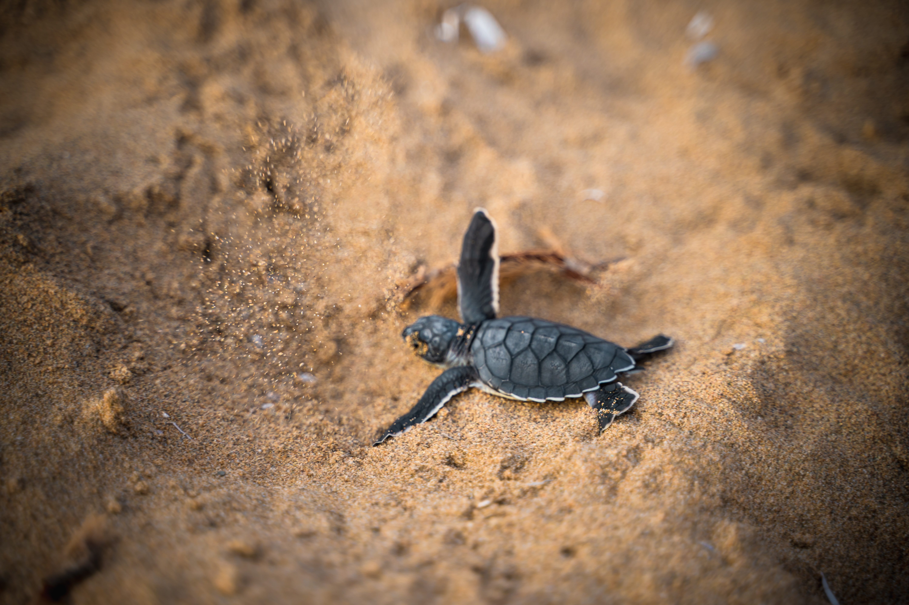
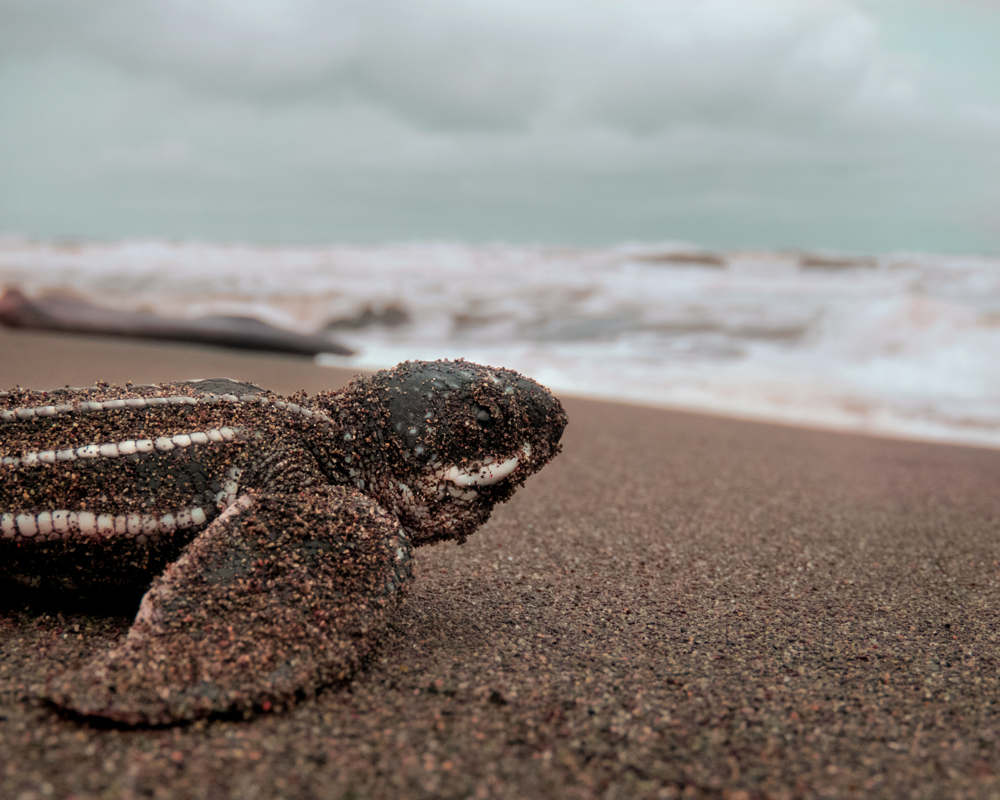
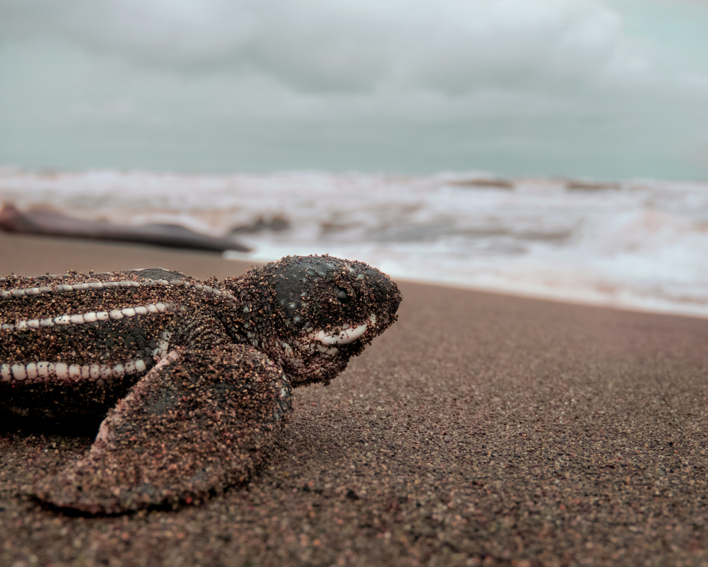

The leatherback turtle is the largest of all non-extinct sea turtles. They can weigh up to 2000 pounds and reach a height of 3 meters. Leatherback turtles differ from other turtles in that their shells are flexible and rubbery rather than hard and boney. They have a tear-shaped body and are mostly inky-blue with white markings. They have huge flippers that can grow to be more than 2 meters long, making them excellent swimmers. They lack claws, unlike most turtles. These characteristics enable the leatherback turtle to swim 4200 meters deep into the ocean. They can also stay underwater for more than 1.5 hours without surfacing. The majority of turtles are found in the Atlantic, Pacific, and Indian oceans. Particularly in tropical locations such as Trinidad & Tobago, Florida, Costa Rica, and Mexico. Though they can be found almost all over the world, the population is declining. Bycatch, plastic pollution, and climate change are all threats to leatherback turtles. Because of these risks and other factors, these turtles have a life expectancy of 30 ↔ 50 years (below average). Primary predators when young include crabs, lizards, raccoons, and birds. Sharks and whales are the top predators of adults. Because leatherback turtles are one of the larger reptiles that live mostly in water, the majority of them are carnivores. Leatherbacks eat a variety of things including jellyfish, sea urchins and fish. Male leatherback turtles often stay in the water after entering it, whereas females only exit when attempting to lay eggs. Leatherback turtles are softer and more delicate, and they require softer sand to mature. Out of the average 100 layed eggs, only about half of the eggs laid by leatherback turtles hatch, and many of the baby turtles die as a result of predators. When leatherback turtles die, their bodies wash up on the beach and are consumed by various animals around the area.
 
